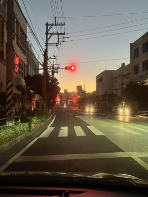

うるがいの話 ある日
最新: ピーチ航空の２時間遅延【うるがいの話 ある日】とは 一日だけのプログです
『うるがいの話』の最新一日だけのプログで、通信料が少なく経済的だ。カニの画像をクリックすると全ての日付が載る『うるがいの話』サイトを表示します
|
|
【うるがいの話】 うるがい(ｳﾙｶﾞｲ urugai)とは、『もずくがに』の名前でとても大きくなります。 |
|---|---|
|
|
【カミマヤーの話】 猫のことを方言でマヤーといいます。カミマヤー（kamimayaa）とは、神の猫のことです。 |
|
【たながぁの音楽】 たながぁ（ﾀﾅｶﾞｰ tanagaa）とは手長えびのことで、何種類かあり大きいのは車 エビぐらいになります。 |

|
【ぶながぁの話】 ぶながぁ(ﾌﾞﾅｶﾞｰ bunagaa)とは、赤い髪の毛、赤い身体、そして身長は１ｍ２０ｃｍ ぐらい、川の蟹を食べているの目撃された。場所は沖縄県国頭郡大宜味村のと ある村僕の隣近所に住んでいる爺さんから、聞いた話です。 |
|
|
【ギーマの話】 ギーマ(giima)とは、山原の里山に咲くスズランに似た、 花を付けます。実は食べられます、 気が付くと口の周りが紫になっています。 |
2025年11月29日 (土）ピーチ航空の２時間遅延
16:12
夜中１１時過ぎ『飛行機２時間遅れたから、８時出発でいいよ』
と言われたので、５時に設定した目覚まし時計を解除する。
『７時２５分までにチェックインってメールが来たので、６時の
出発！』と朝５時に起こされる。ま、普通に起きている時間帯な
ので・・・。朝６時１６分の空港は混雑していた。
信号待ち６時３３分、朝が開け始めた

運航状況実績、２時間遅れている。

子供に届いたピーチ航空のメール

これって格安だから？。そして、機材繰りの影響とはこれかな
全日空95便欠航 エアバスの一部機体に不具合…
約1万3200人に影響